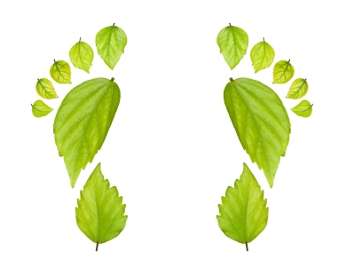

Treedentity
Home
About The Nature Area
Welcome to the Bryan Osborne Nature Center
Lets take a walk through the nature center to find out what tree you are looking at
Click on the footstep to get started
